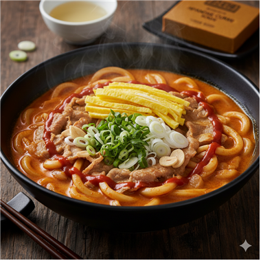

불닭카레

🍝 소개
우동 면 삶고, 목살·마늘·카레 국물·불닭소스로 미친 국물 만들어 졸인 뒤 지단+파 얹으면… 이건 그냥 불닭 우동계의 종결자.
🧾 재료 (1인분 기준)
- 우동 면사리
- 혼다시
- 대패목심
- 고형 카레 1조각
- 파/마늘
- 불닭소스
- 계란 2개
👩🍳 조리 방법
1. 토핑용 파를 썰어 찬물에 담근다. 양파와 마늘을 썰어 놓는다.
2. 계란 2개를 풀어 계란 지단을 만든다.
3. 우동 면을 삶는다. (카레 국물에 한 번 더 삶기 때문에 완전히 익히지 않아도 됨)
4. 후라이펜에 기름을 두르고 마늘을 볶아준다. 어느 정도 익으면 목살과 후추를 넣어 익혀준다.
5. 냄비에 물 한컵 반과 혼다시 반스푼 정도, 고형 카레 1조각을 넣어 녹여준다.
6. 끓기 시작하면 양파와 구운 고기를 넣고, 취향껏 불닭소스를 넣은 후 졸여준다.
7. 우동면을 넣은 후 조금 더 졸여준다.
8. 계란 및 파 토핑을 올려 완성한다.